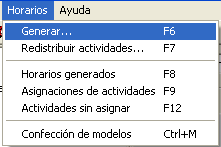
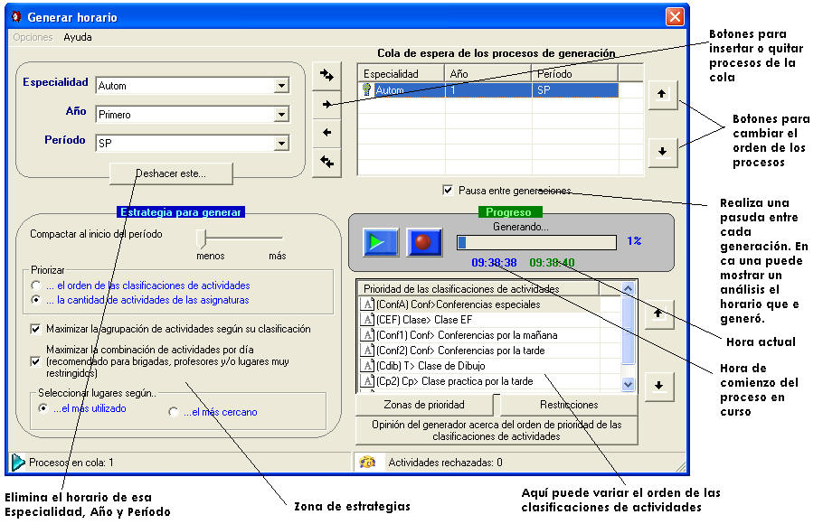
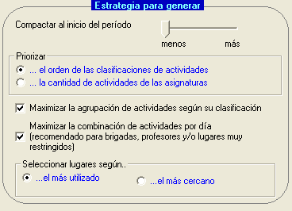

|
Generar horarios |
Terminada la entrada de datos, se puede pasar a generar horarios. El sistema solo genera un horario de una Especialidad, Año y Período a la vez.
Seleccione la opción Generar en el menú Horarios o presione la tecla F6

Aparecerá la ventana de generación:

Cuando se generan un horario no importa si se ha generado antes. El sistema solo se encargará de colocar las actividades que no han sido colocadas.
Estrategia para generar horarios:

La estrategia para generar un horario es la herramienta fundamental del sistema para lograr un horario óptimo. En dependencia de las situaciones que se presentan en la vida práctica, es necesario cambiar esta estrategia para adaptar el generador a la nueva realidad.
Las posibilidades de estrategias de la presente versión del sistema son:
Compactar al inicio del período: El generador se encargará de colocar lo más cercano al primer día del período, en dependencia del la potencia que usted haya establecido.
Priorizar el orden de las clasificaciones de actividades: El sistema le dará mayor prioridad a colocar las actividades según las clasificaciones de actividades. Si usted posee, por ejemplo, dos clasificaciones Conferencia y Clase práctica, el sistema se encargará de colocar primero todas las Conferencias y luego todas las Clases prácticas.
Priorizar la cantidad de actividades de las asignaturas: El sistema le dará mayor prioridad a la asignatura que posea mayor cantidad de actividades según su desglose en el período.
Maximizar la agrupación de actividad según su clasificación: El generador intentará colocar una actividad en un día donde haya actividades de su misma clasificación. Si no selecciona esta casilla las actividades tendrán una mejor posibilidad de combinarse.
Ejemplo:
Supongamos que tengamos dos clasificaciones de actividad:
Conf - Conferencia
Cp - Clase práctica
Y que las zonas priorizadas sean 4, 5 y 6 turno (sesión de la tarde).
Cuando seleccione esta opción el horario quedaría así:
| T | L | M | M | J | V |
| 1 | Cp | ||||
| 2 | |||||
| 3 | |||||
| 4 | Conf | Conf | Conf | Cp | Cp |
| 5 | Conf | Conf | Conf | Cp | Cp |
| 6 | Conf | Conf | Conf | Cp |
Vea que este horario no es demasiado óptimo como queremos, pues existe una actividad fuera de la zona priorizada.
Cuando no seleccione esta opción el horario quedaría así:
| T | L | M | M | J | V |
| 1 | |||||
| 2 | |||||
| 3 | |||||
| 4 | Conf | Conf | Conf | Conf | Cp |
| 5 | Conf | Conf | Conf | Cp | Cp |
| 6 | Conf | Conf | Cp | Cp | Cp |
Vea que ahora se corrió una conferencia para el jueves, pero sin embargo se pudo combinar mejor las clases prácticas y se logró un horario 100% óptimo.
Maximizar la combinación de actividades por día: Cuando se conoce de antemano que las brigadas, profesores o lugares está restringidos, o cuando se posee gran volumen de información, se debe seleccionar esta opción, la cual garantiza una máxima combinación por día. La combinación por día se realiza para que el profesor pueda realizar sus actividades en la menor cantidad de días posibles. Cuando no se cumplas las condiciones anteriores, se recomienda no marcarlo, para aprovechar en tiempo, y que el generador no tendrá que realizar este proceso.
Seleccionar lugares según el más utilizado: Esta opción será muy utilizada cuando en una planificación no interese la distancia entre lo lugares, y por tanto el flujo de brigadas al trasladarse por ellos, pues se conoce de antemano que no se van a mover o se moverán poco. El generador colocará las actividades en aquel lugar que más se haya utilizado en el día.
Seleccionar lugares según el más utilizado: En este caso si interesa el flujo de las brigadas. El sistema colocará las actividades en los lugares según su cercanía, a partir de la Tabla de distancias entre lugares.
Pausas entre generaciones:
Cada vez que se realice una pausa entre generaciones, el sistema le preguntará si desea ver un análisis del horario generado. A partir de él, puede deshacerlo y cambiar su estrategia para crear un horario más óptimo.
Nota: El sistema no puede realizar esta acción automáticamente, pues se considera que la última palabra siempre la tiene el usuario. Quizás sea de interés dejar un horario a un 98% de óptimo para que otro llegue al 100%. Por ahora el sistema garantiza estas situaciones de forma manual.